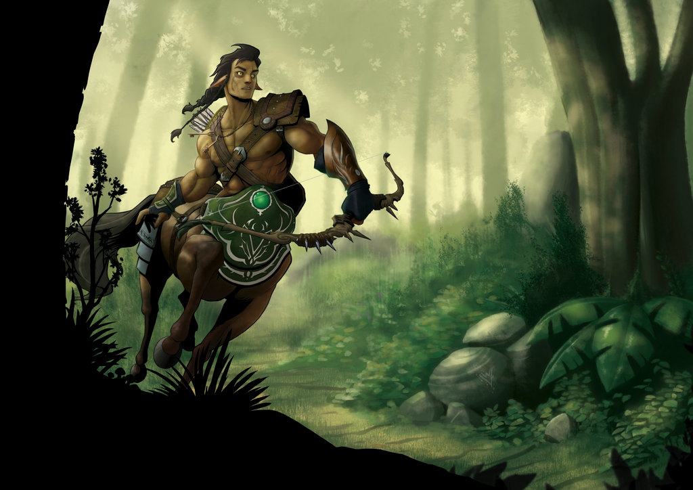
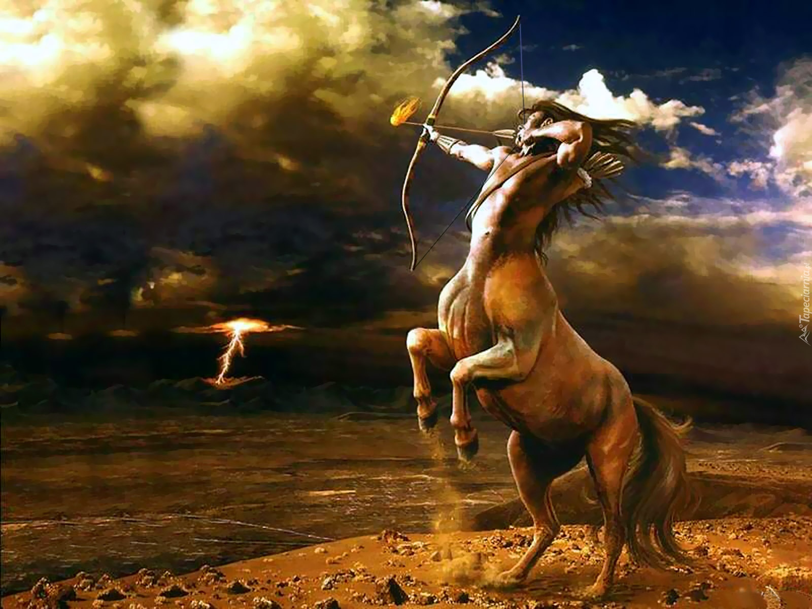

Centaur jest to pół-koń, pół-człowiek. Cały tułów, łącznie z przednimi i tylnymi nogami oraz ogonem należą do konia, natomiast tam, gdzie powinna znajdować się jego głowa, wyrasta już ciało człowieka, od pasa w górę. Centaury najczęściej noszą długie, zwykle pofalowane włosy. Normalnie, za dnia i nocy, centaury nie noszą żadnej odzieży. Jednak podczas wojny całe ich ciało pokryte jest zbroją, która często jest bogato zdobiona w wojenne wzory i proporce. U boku każdego centaura jest miecz. Centaur jest jednym z bardziej znanych nam, ludziom, rodzajów stworzeń fantastycznych. Centaury znane były już wiele setek lat przed naszą erą. Ich wizerunki pojawiały się w księgach, architekturze, sztuce.
Centaury są często kojarzone jako stworzenia bardzo silne i wytrzymałe, co jest prawdą

Rzeczą ciekawą jest, że centaur nie ma jednolitych, ustalonych "zasad odżywiania się - ma on dwa żołądki. Jeden należy do ciała ludzkiego , natomiast drugi do ciała konia. Dlatego też, jak mówią książki, w tym także "Opowieści z Narnii", centaur codziennie musi spożyć dwa posiłki - pierwszy ludzki, w postaci zwykłego, takiego jak nasz posiłku, a drugi posiłek konia - centaur potrafi nawet kilka godzin paść się na łące, żywiąc się trawą.
Inną ciekawostką jest fakt, że centaury wydają końskie odgłosy, pomimo braku głowy tego zwierzęcia. A kopyta i silne nogi parzystokopytnego stworzenia są pomocne m.in. podczas manewrów bitewnych.

Centaury są stworzeniami niezwykle silnymi i wytrwałymi w boju. Dlatego też często biorą udział w bitwach, wojnach, pojedynkach. Są też bardzo mądre, co znajduje swoje wytłumaczenie na różnego rodzaju radach, posiedzeniach, wizytach posłańców - często można wtedy spotkać centaura. Centaury są też wierne swojemu władcy, nie zdradzają swej armii, nie poddają się. Jeśli walczą, walczą do końca, bez względu na stopień niebezpieczeństwa i zagrożenie płynące ze strony wroga.